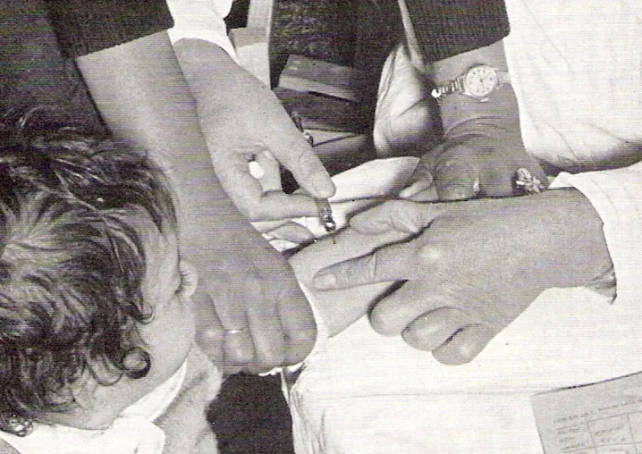
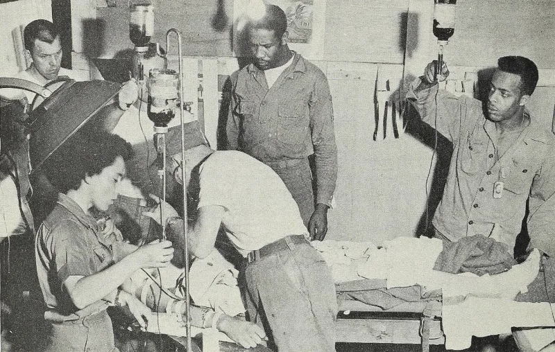

The Witness answer holds up. Do not lead with this one.
That Jehovah's Witnesses reject medicine, like the extreme faith-healing groups. It is false, and it is easy for them to disprove.
Almost all of it. Surgery.
Medication. Chemotherapy.
Vaccines, encouraged since 1952. Organ transplants, permitted since 1980.
Intensive care. The one standing ban is whole blood and its four primary parts.
The organization runs Hospital Information Services and roughly 1,700 Hospital Liaison Committees, in more than 110 countries. They connect members with bloodless medicine and willing surgical teams.
That effort has genuinely advanced techniques that avoid transfusion, and those techniques now help patients who are not Witnesses at all.
It hands a Witness an easy and honest correction. Worse, it discredits the accurate criticisms standing beside it: the 1945 origin of the blood ban, the fractions line that does not hold, and the children celebrated in 1994.
Do not use this one. Keep the criticism precise.
The issue is one lethal ban with a shifting boundary. It is not hostility to medicine.
"I know you take medicine and surgery. My question is only about blood, and about where the line moved."


There is no answer to give: they accept surgery, drugs, vaccines and transplants.
Not applicable. This entry exists to stop the site from using a false claim. Witnesses accept surgery, medication, chemotherapy, vaccines, transplants and intensive care. The one standing ban is whole blood and its four primary parts.
Do not use this one. It is false, and jw.org disproves it in seconds.
The claim is simply false, and it is easily refuted from jw.org itself. Marked avoid, so the site never runs it. The accurate and damning material is the blood-specific record.